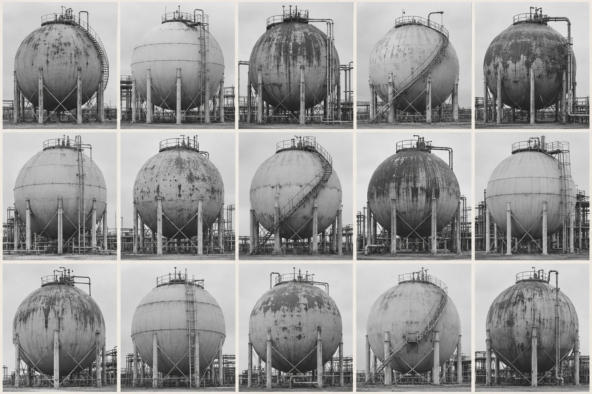

the signal
listen before you build: the problem, the constraints, the people.
00 ワイアードレイヤー layer 0 · network
present day, present time
tools and custom software, built in layers. from the network to the pixel: infrastructure, product, and finish in the same stack.
from the network to the pixel.
wired.rs2026
01the method
every build crosses the same three layers, in the same order.
listen before you build: the problem, the constraints, the people.
architecture first: infrastructure, data, and the tool itself.
finish last: interface, motion, and the print-quality detail.
signal in. system built. surface out.
02the standard
different jobs, same discipline: fast, simple, and built to last.

one standard. every layer.
03manifesto
ワイアードより愛をこめて
“be aware that you are connected.”
chiaki j. konaka · serial experiments lain
wired layer co. builds software end to end: network, servers, apis, interfaces, and product. every project is a stack, and every layer has to stand on its own for the whole to work.
the whole stands on its layers.
wireframe · layer ∞
close the world. open the next.
you are not alone. you are part of the wired.
press esc to return to reality.